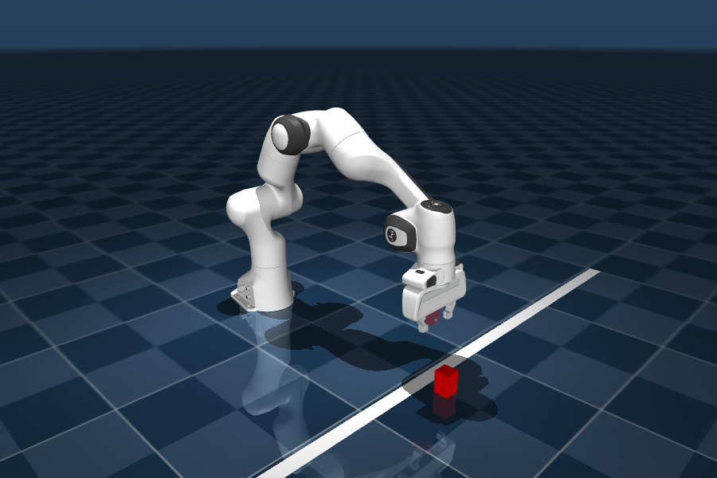
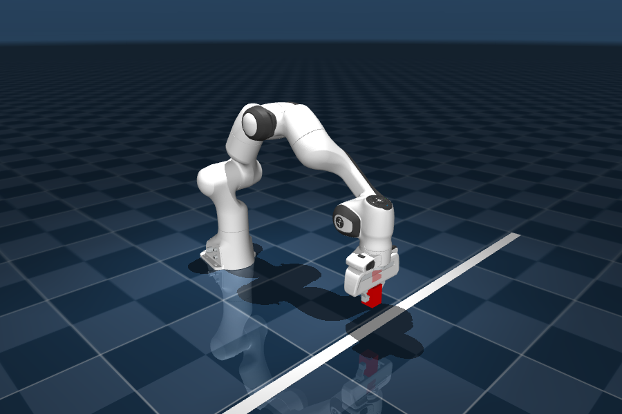

PandaPickCubeCartesian (RSS2025)

官方场景 low_home 预设位姿
官方场景 picked 引导位姿源码版本：56420458c8d81acd6942779d9dab327382117175。结论为静态源码核验，未运行上游训练。
任务接口与验收
{
"control_dt_s": 0.05,
"sim_dt_s": 0.005,
"action": "3: delta y, delta z, gripper; Cartesian IK",
"success_definition": "state: box-target Euclidean distance<.05m; vision: absolute z difference<.05m"
}
br_playground_pick_task；br_playground_pick_reward；br_playground_pick_action；br_playground_wrapper
实际奖励
r=max(S_t-M_(t-1),0); M_t=max(S_t,M_(t-1)); first step r=0; S=clip(4(1-tanh(5d_gb))+8 I_reached(1-tanh(5(.9d_bt+.1e_rot)))+.25 I_no_floor,-1e4,1e4)+.5 I_z>.05+2 I_success; state-only adds -.0005||a-a_prev||-.01 I_no_IK
br_playground_pick_reward；br_playground_pick_base；br_playground_pick_task
训练配置
入口（未执行）：cd rss2025 && python learning/train_jax_ppo.py --env_name=PandaPickCubeCartesian
{
"normalize_observations": true,
"action_repeat": 1,
"discounting": 0.97,
"unroll_length": 10,
"num_updates_per_batch": 8,
"seed": 1,
"gae_lambda": null,
"clipping_epsilon": null,
"value_hidden_layer_sizes": [
256,
256,
256,
256,
256
],
"value_obs_key": "state",
"policy_obs_key": "state",
"num_envs": 1024,
"num_minibatches": 8,
"batch_size": 256,
"learning_rate": 0.0005,
"entropy_cost": 0.0075,
"reward_scaling": 0.1,
"policy_hidden_layer_sizes": [
256,
256
],
"max_grad_norm": 1.0,
"num_timesteps": 5000000
}
br_playground_configs；br_playground_entry
入口（未执行）：cd rss2025 && python learning/train_jax_ppo.py --env_name=PandaPickCubeCartesian --vision
{
"normalize_observations": false,
"action_repeat": 1,
"discounting": 0.97,
"unroll_length": 10,
"num_updates_per_batch": 8,
"seed": 1,
"gae_lambda": null,
"clipping_epsilon": 0.3,
"value_hidden_layer_sizes": [
128,
128,
128
],
"value_obs_key": "state",
"policy_obs_key": "state",
"num_envs": 1024,
"num_minibatches": 8,
"batch_size": 256,
"learning_rate": 0.001,
"entropy_cost": 0.01,
"reward_scaling": 1.0,
"policy_hidden_layer_sizes": [
128,
128,
128
],
"cnn_output_channels": [
16,
32
],
"num_timesteps": 10000000
}
br_playground_vision_config；br_playground_entry
证据缺口
- Brax dependency defaults for GAE/clip not pinned here
- No executed baseline evaluation